Handpicked 5-day packages blending culture, cuisine, and unforgettable landscapes — all-inclusive, zero hassle.
🌿 4 Destinations🏨 All-Inclusive⭐ Expert Guides
Our Packages
Holiday Packages
Click any destination to explore the full itinerary
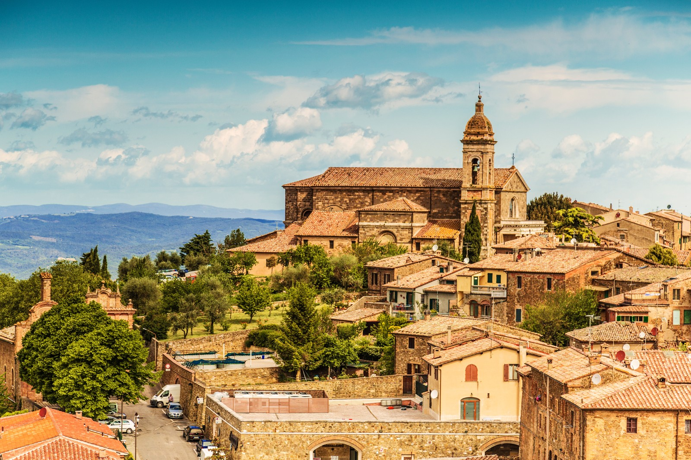
Most Popular
Montalcino
Wine & Tuscan countryside
🍷 Wine tasting🍝 Cooking class🏡 Boutique hotel
★★★★★€540 /person
Best Value
Rome
History, culture & cuisine
🏛️ Colosseum🕌 Vatican🌃 Night tour
★★★★★€480 /person
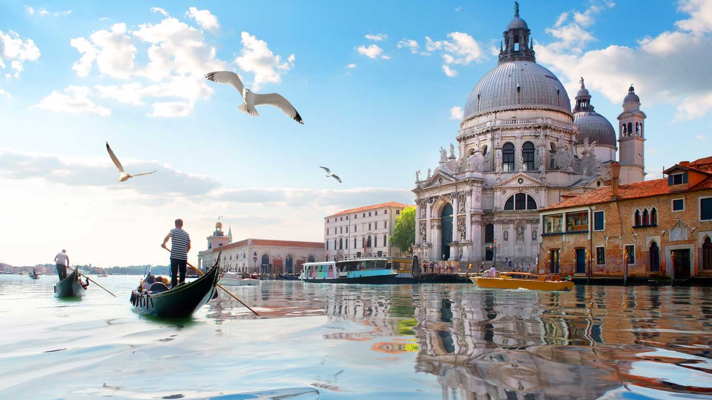
Most Romantic
Venice
Canals, art & romance
🚣 Gondola🎭 Hidden gems🫙 Murano glass
★★★★★€650 /person
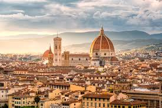
Art Lovers
Florence
Renaissance art & culture
🖼️ Uffizi Gallery🍷 Wine tour🎨 Art workshop
★★★★☆€390 /person
Montalcino — Wine & Soul of Tuscany
Perched on a hilltop at 567 metres above sea level, Montalcino is one of Tuscany's crown jewels. Home to the world-renowned Brunello di Montalcino DOCG — often regarded as Italy's finest red wine — the town enchants visitors with its medieval fortress, panoramic vineyards, and the warmth of authentic rural life. Ideal for wine lovers, foodies, and anyone seeking a slower, richer pace of travel.
5
Days
€540
Per person
4★
Hotel
12
Max group
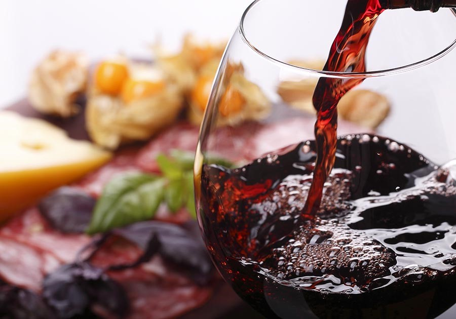
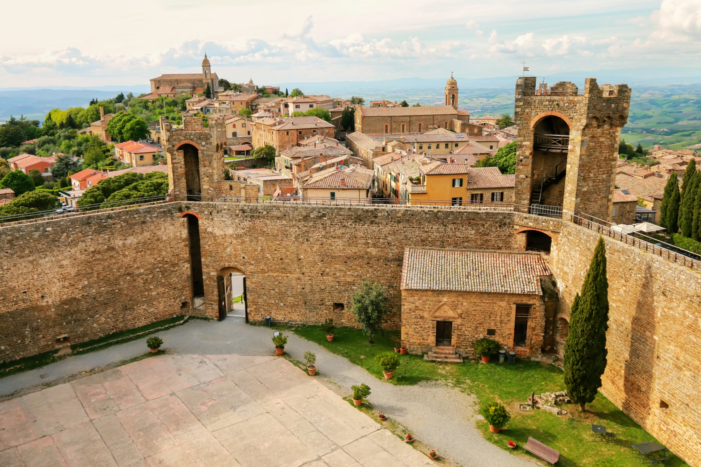
5-Day Itinerary
1
Arrival & Local DinnerCheck in to your boutique hotel, stroll the medieval town, aperitivo at the fortress with panoramic views. Evening dinner at a traditional local restaurant.
2
Farm Visit: Salami & CheeseMorning visit to a local farm producing artisan salami and aged cheeses. Meet the producers, taste the products, and learn about traditional curing and aging methods.
3
Vineyard & Winemaking ExperienceHands-on winemaking session at a family estate. Learn blending, oak aging, and take home your labelled bottle.
4
Cooking ClassFull-morning cooking class with a local cook: Tuscan recipes, fresh pasta, and seasonal dishes prepared with ingredients from the surrounding countryside.
5
Perfume Creation & Cucina Povera LunchCreate your own personal fragrance at a local artisan perfume workshop. Farewell lunch celebrating the humble, flavourful tradition of Tuscan cucina povera.
✓ 4-star hotel (4 nights)✓ Daily breakfast✓ All tours & tastings✓ Airport transfer✓ Expert guide
Rome — The Eternal City
Rome is a living museum. Few cities layer so many civilisations — ancient, Renaissance, Baroque — into a single, walkable metropolis. Over 2,000 years of history unfold around every corner: from the majestic Colosseum to the whispered prayers of the Vatican, from hidden neighbourhood trattorias to rooftop terraces with views that steal your breath. This is not a city you visit — it's one you feel.
5
Days
€480
Per person
4★
Hotel
15
Max group
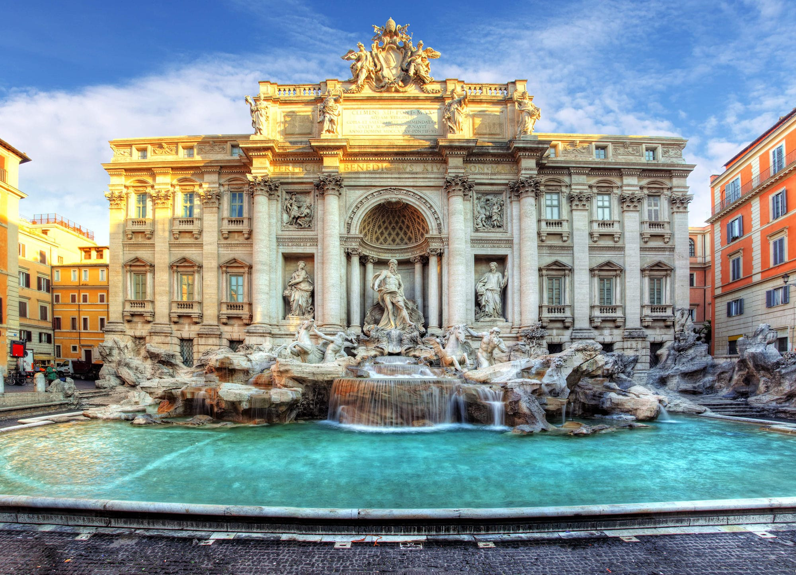
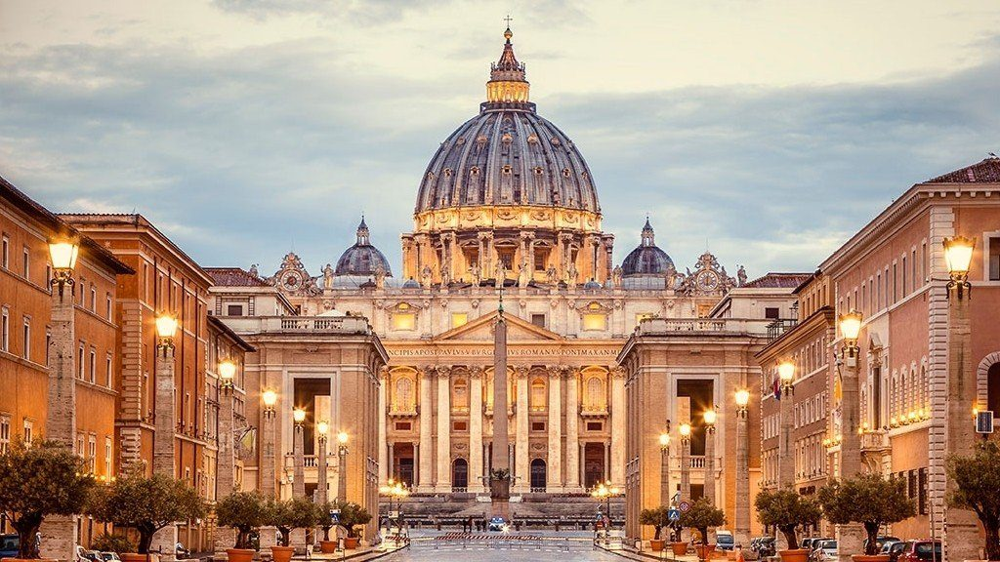
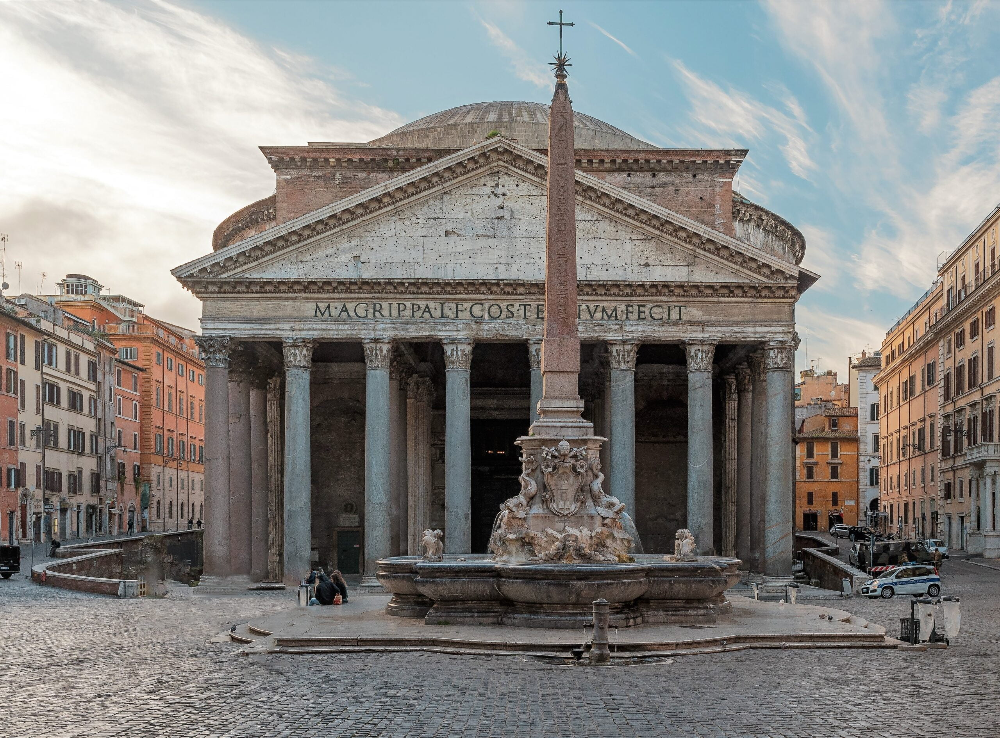
5-Day Itinerary
1
Ancient RomeColosseum skip-the-line, Roman Forum & Palatine Hill. Evening at Campo de' Fiori market.
2
Vatican & TrasteverePrivate Vatican Museum tour, Sistine Chapel, St Peter's Basilica. Afternoon in charming Trastevere.
3
Food & Cooking ClassMorning market tour at Campo de' Fiori, pasta and tiramisu cooking class, gelato trail.
4
Baroque Rome & Night TourTrevi Fountain, Pantheon, Piazza Navona. Atmospheric night walking tour of illuminated monuments.
5
Neighbourhood & Wine FarewellExplore Pigneto or Ostiense district. Farewell wine tasting dinner with Roman sommelier.
✓ 4-star hotel (4 nights)✓ Daily breakfast✓ Skip-the-line tickets✓ Cooking class✓ Night tour✓ Airport transfer
Venice — A City Like No Other
Built on 118 small islands connected by 400 bridges, Venice defies every expectation of what a city can be. There are no cars — only gondolas, vaporetti, and the sound of your own footsteps echoing through narrow calli. Discover Renaissance palaces, Byzantine mosaics, and the world's finest glass-blowing tradition. Whether you're celebrating romance or feeding a lifelong curiosity, Venice rewards slow, attentive exploration.
5
Days
€650
Per person
4★
Hotel
10
Max group
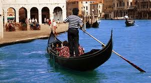
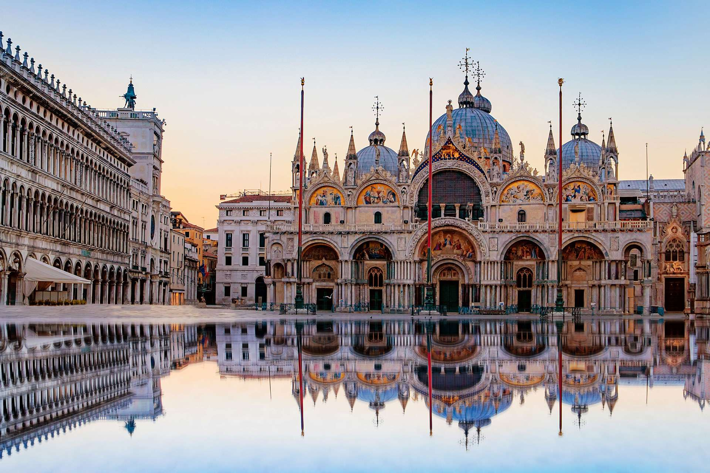
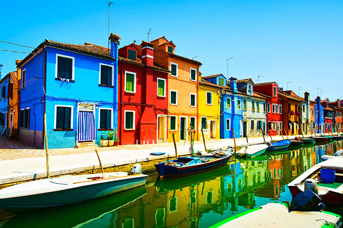
5-Day Itinerary
1
Arrival & Grand CanalPrivate water taxi from the station, welcome Spritz, sunset gondola ride along the Grand Canal.
2
Hidden VeniceOff-the-beaten-path walking tour: Cannaregio ghetto, secret courtyards, local cicchetti bars. No crowds.
3
Murano Glass WorkshopFerry to Murano, private glass-blowing demonstration, create your own souvenir piece.
4
Islands of Burano & TorcelloBurano's rainbow houses and lace-making tradition, Torcello's ancient Byzantine basilica, lagoon lunch.
5
Doge's Palace & Farewell DinnerDoge's Palace and Bridge of Sighs tour. Candlelit farewell dinner at a canalside osteria.
✓ 4-star hotel (4 nights)✓ Daily breakfast✓ Gondola ride✓ Islands ferry✓ Glass workshop✓ Water taxi
Florence — Cradle of the Renaissance
Florence is where the Renaissance was born and where it still breathes. In a single square mile you'll find more UNESCO-listed masterpieces than most entire countries: Botticelli's Venus, Michelangelo's David, Brunelleschi's impossibly daring dome. But Florence is also leather workshops, family-run wine bars, and the best bistecca in Italy. A city of extraordinary depth, endlessly rewarding for first-timers and repeat visitors alike.
5
Days
€390
Per person
3★+
Hotel
15
Max group
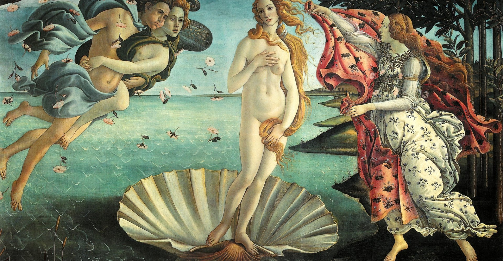
5-Day Itinerary
1
Uffizi Gallery & DuomoSkip-the-line Uffizi tour, Botticelli, Raphael. Climb Brunelleschi's dome for panoramic views.
2
Accademia & Walking TourMichelangelo's David, Ponte Vecchio, Oltrarno district. Aperitivo at a rooftop bar overlooking the Arno.
3
Leather & Art WorkshopMorning at the Santa Croce leather school. Afternoon watercolour or fresco workshop with a local artist.
4
Chianti Wine TourDay trip to the Chianti Classico zone: two estate visits, olive oil tasting, lunch with valley views.
5
Mercato Centrale & Food TastingMorning at Florence's historic food market, followed by street food tour and farewell dinner in San Niccolò.
✓ Hotel (4 nights)✓ Daily breakfast✓ Skip-the-line tickets✓ Chianti day trip✓ Art workshop✓ Airport transfer
Why DreamPack
Travel Done Differently
🧭
Expert-Led
Every tour is led by passionate local experts — historians, sommeliers, artists — not generic guides.
🏨
Curated Hotels
We only partner with characterful, independently-owned hotels. No chains, no cookie-cutter rooms.
🍽️
Food-First
Every itinerary is built around authentic eating experiences — markets, classes, cellar doors, family tables.
👥
Small Groups
Maximum 15 people per departure. More access, more flexibility, more genuine connection.
🤖 AI Travel Assistant
Ask anything — packages, travel tips, local culture, what to pack…
 Best Value
Best Value